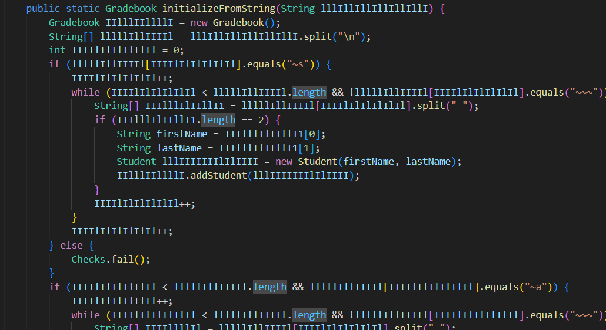

I am a Computer Science student at the University of Maryland with an enthusiasm for programming and aerospace related topics. The following links showcase some general information about me and my projects.
email | linkedin | github/*Computer Science Projects*/
Anomaly Detection Using STL
September 2023 | Python
- This project endeavors to leverage Signal Temporal Logic (STL) to enhance anomaly detection in continuous, time-variant traffic data.
Unlabeled ship/traffic traffic data undergoes preprocessing using unsupervised machine learning algorithms to cluster synchronous patterns. The framework is further enriched by injecting artificial bad actors, followed by the application of STL for precise quantification and specification of anomalous detections.
Network Security Testing
November 2023 | Java
- Encrypted gradebook system designed in Java
- Implementation of AES data encryption, code obfuscation.
Detecting and Avoiding Gap-Like Structures on a Variable-Sweep Wing UAS
March 2022 | Python
- Obstacle Avoidance for UAVs.
- Written in Python using OpenCV library
Document Editor in C
Oct 2022 | C
- Basic document editor written in C
- Implementation of paragraph organization, text replacement, highlighting, and search features.
VR - AVW Horror Experience
Sep 2022 | Unity Game Engine
- VR project utilizing photo-scanning of buildings to create a realistic and immersive horror experience.
- Development in Progress
Thermal Imaging [OPEN CV]
June 2022 | C++

- Implemented an image processing Algorithm to be used with UAVs in order to identify the severity of wildfires using thermal imaging.
- Utilized several post-processing techniques to achieve consistent identification of fires and their total surface area. Based on the data, each fire can be assigned a severity classification.